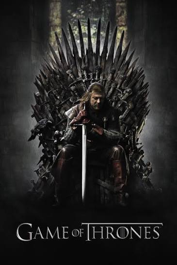
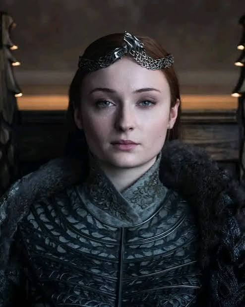

Les saisons
Huit saisons a parcourir ->
S SERIESLY

Série primée
« Dans le jeu des trônes, on gagne ou on meurt. »
Sur le continent de Westeros, de grandes maisons s'affrontent pour le
Trône de fer pendant qu'une menace ancienne se réveille au Nord.
| Sortie | Saisons | Format | Age |
|---|---|---|---|
| 2011 | 8 | ~ 60 min | -16 |
Créée par David Benioff et D. B. Weiss (États-Unis)



Huit saisons a parcourir ->
Presse et spectateurs ->